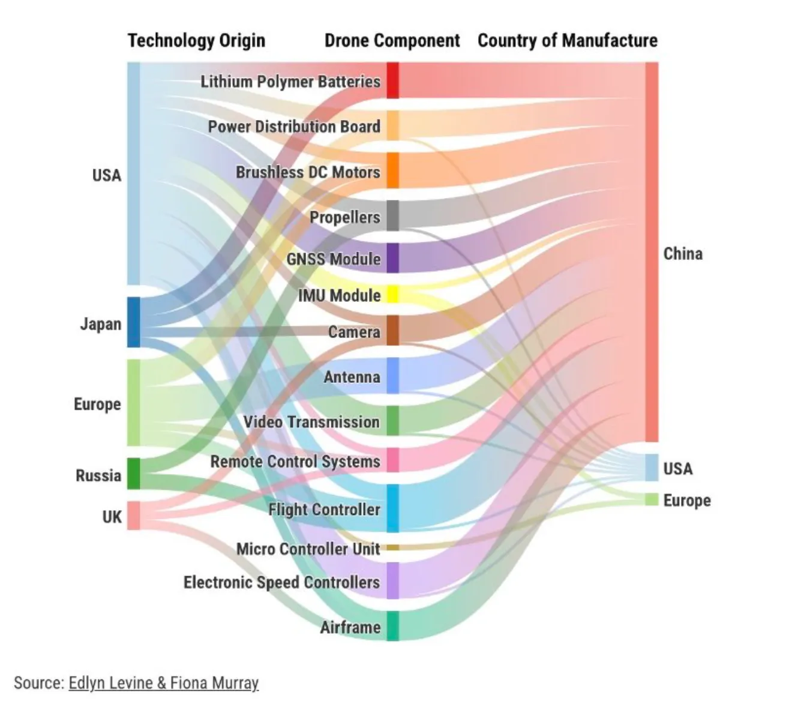

Writes Noahpinion - https://www.noahpinion.blog/ Detailed analysis of world affairs - ‘how things came to be’, ‘why is something the way it is’. A must read to understand the political and economic state of the world.
2024-08-14 Mass deportation would accomplish nothing
- https://www.noahpinion.blog/p/mass-deportation-would-accomplish
- Immigrants add labor force to the country, could reduce wages but also spend and thus push wages up. So looks like the net effect is not much.
- Deportation just causes a lot of chaos and fear. Probably it is a deterrence for future people trying to come in.
- There are other ways to deport than what is proposed. From 90 to 2010, looks like over a million people were deported with due process.
- Increase border security
- Crack down people who hire illegals
- Looks like the asylum process has some loopholes that need to be fixed.
2024-08-07 - The Democrats’ new sunny vibes
- https://www.noahpinion.blog/p/the-democrats-new-sunny-vibes
- Kamala Harris has surged in popularity. Trump’s lead seems to have shrunk.
- The vibe has shifted to joy and positivity instead of fear-mongering. I guess Americans genuinely want things to return to normalcy and have election cycles similar to the ones that we had during Clinton and Obama years. Reduce all the nastiness drastically.
- Harris is also moving away from extreme leftists who are also getting defeated in recent polls.
- I hope the good vibes last. Sometimes it feels like wishful thinking.
2024-08-04 At least five interesting things for the weekend
- https://www.noahpinion.blog/p/at-least-five-interesting-things-68b
- Intel’s struggles: Stock has been down since 2021. The reason might not be the CHIPS act or government subsidies that got Intel distracted to miss the AI revolution.
- Canada’s economic challenges: It is near to the US, is immigration friendly, and yet is struggling with low productivity. Probably due to red tape and regulations.
- Infrastructure and state capacity: Need to check out Bart’s Fleet of the Future. An example of infra project costing less than planned.
- East Asian economic development: The zone seems to be doing well. More capital investment.
- Race in American politics: ‘Whites for Kamala’ seems to be a shift in thoughts around race.
- San Francisco nonprofit corruption: It was an eye opener to know about the corruption in SF non-profits.
2024-08-03 - Why America fell behind in drones
- https://www.noahpinion.blog/p/why-america-fell-behind-in-drones
- Guest post by a couple of founders of a robotics company making drones.
- Last week I read the post about how the US fell behind in battery and now this. I had always thought that US was far ahead in drones. But looks like the market share for commercial drones is only 10% US and 90% China! For consumer it is 23% US vs 77% China.
- DJI, a Chinese company dominates this area.
- I loved this infographic - 
2024-07-31 - Who is “Weird”
- https://www.noahpinion.blog/p/whos-weird
- Before the article I didn’t know that democrats were calling republicans as weird. I check X today and there are so many posts about this. Wow!
- He says a mild insult like weird is kind of like returning to normal and more decent politics than what we’ve seen in the past few years.
- I was reminded of Steve Jobs’ famous quote - “Here’s to the crazy ones. The misfits. The rebels. The troublemakers. The round pegs in the square holes. The ones who see things differently..”
- Republicans seem to not like this insult because they don’t want to be seen as outcasts and people who rebel. But things have changed in the couple of decades - “weird” liberal ideas became mainstream, and conservatives have become the new counterculture. So wearing a badge of religion openly is being a ‘rebel’ now.
2024-07-30 - Why did the US miss the battery revolution?
- https://www.noahpinion.blog/p/why-did-the-us-miss-the-battery-revolution
- Great article on why the US is so far ahead of other countries. US was at the forefront of every major technological revolution in the last century (probably after the world wars) - computers, space, nuclear power, semiconductors, internet, etc.
- But that was not the case with battery innovation. Before this article, I thought US (esp. Tesla) was at the forefront. But looks like Japan and China are far ahead in terms of research and innovation.
- He gives a few reasons, supply chains, bottoms up manufacturing, etc. It might also be because of the oil companies working against it. The government supported the solar industry a lot. They could have done the same for battery too.
- I still think people in the US are afraid of EVs because batteries could catch fire. Creating large batteries that can store energy would be like having mega deposits of oil underground. Seems like the path to go forward. Can we store enough energy to launch a rocket? May be!
2024-07-26 - Why Trump or Harris might fail to stand up to China
- https://www.noahpinion.blog/p/why-trump-or-harris-might-fail-to
- Looks like both Trump or Harris would not be able to deliver on what the general public expects from the US leadership - Limit China’s power and influence.
- Trump might sell out for cash, might just focus on empty wins, more talk than action.
- Harris might continue Obama’s policy of ‘engagement’, letting China do its thing, ‘hoping’ that more manufacturing and modernization would lead to liberatization. But that may be false hope. “That attitude was already dangerously complacent in the early 2010s, and to bring it back now would be madness.”
- I guess many people in the US and other parts of the world feel that if that country adopts things in the US, they would be like the US. But that has yet to work. What works in the US works only in the US.